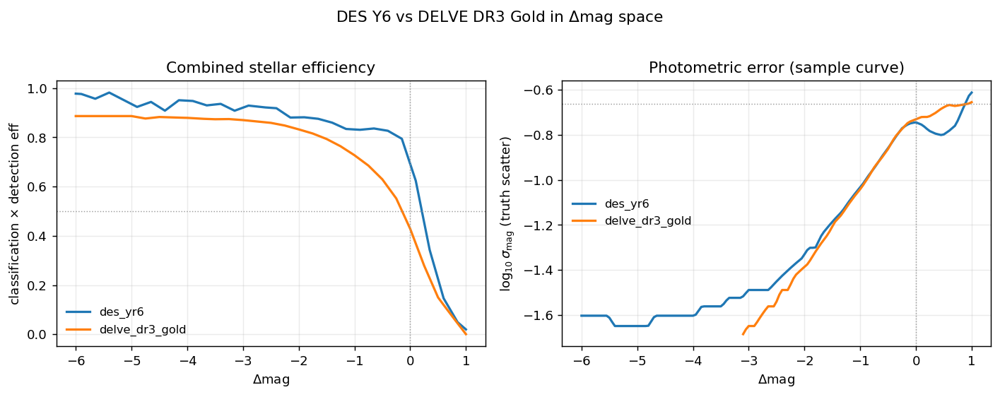

Product verification — des/yr6 and delve/dr3_gold#
Verification record for the two DECam Balrog releases as shipped in
data.zip. Everything below is reproducible with
python scripts/verify_products.py \
--release des_yr6=data/surveys/des_yr6 \
--release delve_dr3_gold=data/surveys/delve_dr3_gold \
--figdir figs/verification --manifest artifacts/product_manifest.json
Result: 88 / 88 checks pass. Test suite: 370 passed, 2 skipped, 0 failed.
Derivation and methodology are in Selection functions from Balrog (DECam surveys); per-release summaries in DES and DELVE.
What was verified#
Group |
Checks |
What it establishes |
|---|---|---|
MANIFEST |
presence + sha256 of every product |
the archive is complete and identified |
CONTRACT |
column names, ranges, clamp, curve orderings, forced-photometry pair |
streamobs will read what it expects |
DEPTH |
each map loads; nside, area, median |
the depth maps are what they claim |
PHYSICS |
anchor, inflation factor, plateau, 50% crossing |
the curves are physically sensible |
CROSS |
DES vs DELVE in |
the two releases are mutually consistent |
Headline numbers#
|
|
|
|---|---|---|
injections |
145,724,947 |
62,922,015 |
true stars binned |
4,488,693 |
13,141,646 |
detected / classified |
86.7% / 83.6% of detected |
63.6% / 85.4% of detected |
bands |
griz |
griz |
depth map nside |
128 |
128 |
footprint |
5,340 deg² |
17,099 deg² |
truth-anchored m5 (g) |
25.025 |
24.373 |
error-inflation factor |
1.464 |
1.502 |
bright-end detection plateau |
0.999 |
0.901 |
combined eff crosses 50% at |
+0.210 |
−0.144 |
star classifier |
|
|
|
0.005 |
0.005 |
Truth-anchored depths and the shift applied to each input map’s median:
band |
DES m5 |
shift |
DELVE m5 |
shift |
|---|---|---|---|---|
g |
25.025 |
−0.297 |
24.373 |
+0.196 |
r |
24.850 |
−0.280 |
23.962 |
+0.287 |
i |
24.402 |
−0.180 |
23.389 |
+0.185 |
z |
23.754 |
−0.124 |
22.951 |
+0.391 |
Within each survey all four shifts share a sign. That coherence is the check
that validates the anchor — a band-dependent sign flip would mean the anchor was
tracking the selection rather than the depth, which is exactly the failure mode
that ruled out the detected anchor sample for DES (there, g and r moved
1.03 mag in opposite directions). Both releases use anchor_sample: nosnr.
The cross-check#
In the DES footprint DELVE DR3 Gold is DES Y6, so the two must agree. They are
compared in delta_mag space rather than on the sky, because the sky overlap is
only 369 deg² (7.1% of DES) and is edge-dominated. Both are classified by the
same bdf_extended_class_dr3gold interpolation nodes, which is what makes the
comparison meaningful.
Over −4 < delta_mag < 0:
quantity |
median abs. difference |
max |
|---|---|---|
combined stellar efficiency |
0.063 |
0.292 |
photo-error (sample curve) |
0.020 dex |
— |
{kind=link}

Regenerate with --figdir; the script writes this figure on every run.
The residual efficiency offset is understood: DES’s bright-end plateau sits at
0.999 against DELVE’s 0.901 because DELVE applies per-object quality flags
(meas_flags, meas_bdf_flags) in the efficiency numerator, the Roman/LSST
convention. DES’s sparse 20″ injection grid leaves almost nothing flagged
(0.056%), so its plateau reaches unity. This is a difference in what the two
numerators count, not a disagreement about the surveys.
Findings#
Three defects were found and fixed while assembling this release.
DES depth maps were mislabelled nside1024#
The four des_yr6_maglim_* maps contained nside-512 data under an
_nside1024 filename. The input des_y6_5_sig_*.hsp maps are nside 512 and
MaglimMap.to_healpix only ever degrades, so --maglim-nside 1024 was a
no-op while the output filename took the requested value regardless.
Nothing was functionally wrong — streamobs reads nside from the map, not the name — but the files would have gone to Zenodo misdescribed. They are renamed so the config, the survey doc and the figure generator were corrected alongside it. The verifier now asserts that a map’s nside matches its filename.
Every release ships at nside 128 (≈27′ pixels), so all surveys share one depth resolution. DES degrades there from its nside-512 HealSparse inputs and DELVE from nside-16384 inputs; neither is upsampled. The mislabelling above is what the check was written for, and it would have caught a request for a resolution finer than the input.
_nocut photo-error curves were missing for both releases#
streamobs treats every non-reference band as forced photometry — measured at
the reference band’s position, so not conditioned on its own detection — and
requires a _nocut photo-error pair measured without the reference-band S/N
cut. Neither DECam release shipped one, so any r/i/z photometry raised.
The reducer already computed the no-S/N-cut populations for the depth anchor, so
it now accumulates the same two histograms against classified_nosnr and emits
*_photoerror_<band>_nocut.csv and *_catalog_nocut.csv alongside the existing
pair. Both releases were regenerated; every previously shipped curve, map and
audit number reproduced byte-for-byte, so the new curves are a strict addition.
The two pairs behave exactly as the convention predicts: identical brightward of
the depth (54 bins for DES, 22 for DELVE agree to within 1e-6), and diverging
only faintward, where the S/N cut truncates the detected sample. There the cut
curve’s measured scatter turns over and falls while the _nocut curve keeps
rising — up to 0.58 dex apart for DES and 0.38 for DELVE. Applying the cut curve
to forced photometry would therefore have understated faint-band errors.
Found separately while wiring this up: Survey._resolve_log_photo_error formats
its “no _nocut curve” error with self.full_name, which does not exist — the
property is namespace. Every release on main ships _nocut curves, so the
branch had never been reached; the first survey without them got an
AttributeError instead of the intended message. Fixed.
The DELVE photo-error curve was quantisation-limited#
The truth-scatter histogram uses 0.005 mag bins, so a binned σ can only take
multiples of 0.0025. Brightward of delta_mag ≈ −3.26 the DELVE curve was
pinned to that grid — stepping 0.005, 0.0075, 0.010, 0.0125 and flat across
several bins at a time — i.e. reporting the bin width rather than the scatter.
The original afterburner cut at −5.2 removed only a non-monotonic wiggle and
left this region in place, so the curve floored at exactly 0.00500 mag.
The cut moved to −3.25, the first bin whose σ reaches 0.020 — the same floor the
cleaned DES curve has. This drops 23 of 64 bins from each DELVE curve and makes
sys_error: 0.005 safe on the same footing as DES (3.1% in quadrature). Under
the old cut the same term would have been a 41% inflation of a number that was
never a measurement.
This supersedes the sys_error open item in the DES handoff, which proposed
setting it to zero. Zero would have been the right response to a real 0.005
floor; the floor was an artefact, so the correct fix was upstream in the cut.
Known limitations#
Carried forward into the release, not fixed here.
DELVE’s efficiency table starts at
delta_mag−5.0 (g = 19.375), 3.4 mag shallower on the bright side than DES’s −8.4 (g = 16.625), because brighter bins fall below the 20-star minimum. Stars brighter than g ≈ 19.4 are flat-extrapolated atdetection_eff= 0.90.Galaxy misclassification is noise-dominated brightward of
delta_mag≈ −4 in both releases, and has no external validation in either. SPLASH-SXDF cannot supply one: itsSTAR_FLAGis pure but incomplete, which validates completeness while making contamination unmeasurable.The photo-error curves invert faintward of the depth. For DES the sample curve drops below the catalog curve in 5 bins over
delta_mag+0.24 to +0.72. This is the detected-population effect described in the methodology doc — beyond the 50% crossing only objects that scattered bright are recovered, compressing the measured scatter while the reported error keeps rising. The verifier asserts the ordering only fordelta_mag≤ 0 and reports the inversion range.EXT_XGBis not computable on Balrog. DES ships a trained surrogate plus a per-magnitude deconvolution; DELVE ships the exactly-reproduciblebdf_extended_class_dr3goldselection instead, which is a different selection from anEXT_XGBcut on the real catalogue. No DELVE surrogate is shipped.DELVE has no external validation of its star classification, unlike the SPLASH-SXDF check done for DES, and no truth catalogue overlapping the footprint can supply one.
Manifest#
data.zip — 24,613,885 bytes, 126 files
sha256 6dc3578ecfbfcf53af6e43a792b3170f0a09e187d0a63fe8d70b10cbdb8b2e0b
Per-file sizes and sha256 for both releases are in
artifacts/product_manifest.json. The shipped products are:
|
bytes |
|
bytes |
|---|---|---|---|
|
82,167 |
|
265,039 |
|
81,811 |
|
262,674 |
|
81,774 |
|
259,920 |
|
81,950 |
|
264,399 |
|
2,412 |
|
1,524 |
|
1,525 |
|
828 |
|
1,525 |
|
828 |
|
1,544 |
|
828 |
|
1,544 |
|
828 |
|
1,647 |
|
1,392 |
|
932 |
|
720 |
The *_raw.csv photo-error provenance and the des_y6_5_sig_*.hsp derivation
inputs are deliberately excluded from the archive; they are build inputs, not
runtime products.
Provenance#
reducer |
|
branch |
|
DES catalogs |
|
DELVE catalog |
|
DELVE depth inputs |
|
DES depth inputs |
|
environment |
|
Both audit JSONs ship inside the archive and record row counts, the anchor per band, the error-inflation factor and the classifier used.
Uploading#
Upload
archive/data.zipto Zenodo as a new version of the record.Update
BASE_DATA_URLinbin/download_data.pyto the new record id (currently18298544, which still serves the old DES products).ARCHIVE_SIZE_MBin the same file is already updated to 25.